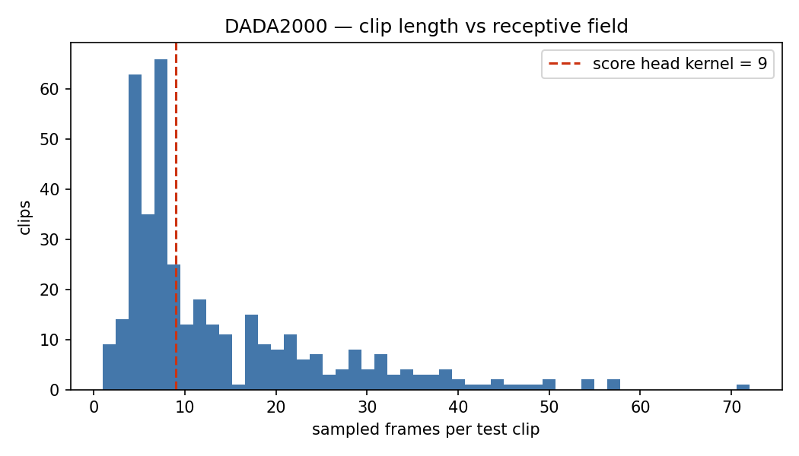
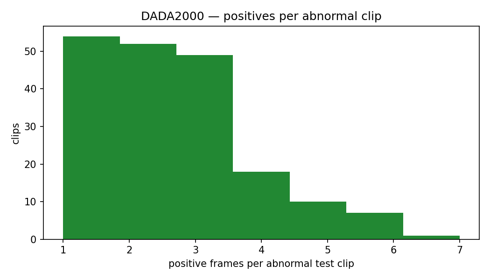
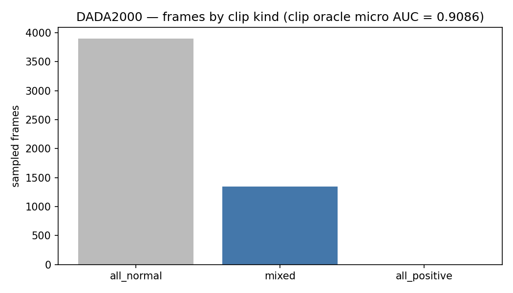
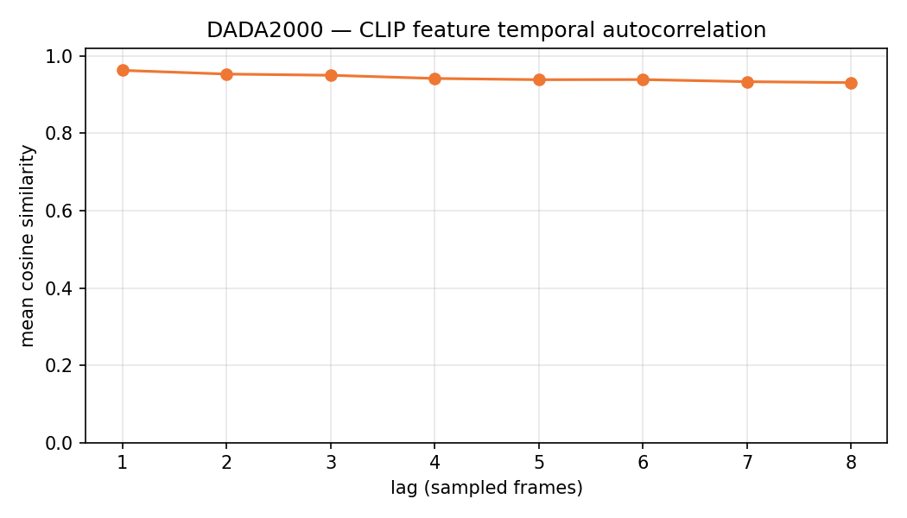

Mọi con số trong tài liệu này là thuộc tính của dữ liệu nằm trên đĩa, không phải kết quả của bất kỳ mô hình nào. Không có checkpoint nào được nạp, không có tham số nào được huấn luyện.
ConvScoreHead. 55.4% clip test nằm gọn trong một timestep đầu ra duy nhất — về mặt kiến trúc, mô hình không thể tạo ra đường cong có biến thiên trong những clip đó.auc_macro ở mức may rủi. Không có biến thể KIP nào sửa được — cần rebuild corpus (cửa sổ độ dài cố định) và/hoặc stride mịn hơn, chứ không phải một loss mới.Công cụ core.tools.eda tự động phát verdict khi một ngưỡng bị vượt. DADA-2000 kích hoạt bốn CRITICAL và hai HIGH. Đọc theo thứ tự: hai cái đầu là lỗi kiến trúc–dữ liệu, ba cái sau là lỗi diễn giải chỉ số, cái cuối là trần biểu diễn.
Đo được: 55.4% clip test có T <= kernel_size = 9 (median T = 9); 24.3% tổng số frame nằm trong các clip đó. Mỗi timestep đầu ra ở đó "nhìn thấy" toàn bộ clip.
Cách xử lý: hạ model.score_head_kernel (thử 3), hoặc hạ frame_stride để median T lớn hơn hẳn 9. Cả hai đều kích hoạt bài học C2 — mọi cache đặc trưng hiện có sẽ bị vô hiệu.
Đo được: 90.3% clip nhận k = 1 tại mil_topk_pct = 16: mỗi clip mỗi bước chỉ đóng góp đúng một frame được giám sát.
Cách xử lý: hạ loss.mil_topk_pct, hoặc chấp nhận rằng giám sát ở đây là mức clip và ngừng đọc các tuyên bố mức frame vào nó.
Đo được: 4 clip được khai báo abnormal trong meta.json nhưng không còn frame positive nào sau khi lấy mẫu. Mọi chỉ số đang đếm chúng như clip normal.
Cách xử lý: loại chúng ở thời điểm chấm điểm (DADA_SETUP.md §5.1). Không "sửa" bằng --strict: cờ đó ném lỗi chứ không vá dữ liệu.
Đo được: oracle gán điểm hằng số theo clip đạt micro AUC 0.9086 với năng lực định vị bằng 0; 99.9% cặp positive/negative vắt qua hai clip.
Cách xử lý: lấy auc_macro làm số headline và luôn in oracle này bên cạnh mọi micro AUC. Tuyệt đối không đặt một micro AUC của corpus này cạnh một con số frame-level đã công bố.
Đo được: bộ phát hiện chỉ đọc số frame của clip (điểm hằng số = -T) đạt clip-level AUC 0.8105 và micro AUC 0.8654 — clip ngắn hơn chính là clip abnormal. Có 107 clip normal (3,157 frame) nằm hoàn toàn ngoài dải độ dài của nhóm abnormal.
Cách xử lý: rebuild corpus thành các cửa sổ độ dài cố định với vị trí bất thường đặt ở offset ngẫu nhiên. Trước khi làm được điều đó, in baseline này cạnh mọi micro AUC và coi mọi arm không vượt nó là chưa đo được gì.
Đo được: ngay cả linear probe có giám sát cũng chỉ đạt macro AUC 0.5228, trong khi probe mức clip đạt 0.6799.
Cách xử lý: không head nào đặt trên đặc trưng này định vị được. Công việc mức frame trên corpus này cần một backbone khác hoặc stride mịn hơn — không phải thêm một biến thể KIP (xem RESULTS_DADA.md §6, §10-C).
Bảng dưới là tổng lượng dữ liệu thực sự vào được pipeline sau khi lấy mẫu stride-8. Chú ý sự cân bằng gần như hoàn hảo giữa abnormal/normal ở mức clip — và sự mất cân bằng nghiêm trọng ở mức frame.
| Split | Clip | Abnormal | Normal | Frame (đã lấy mẫu) |
|---|---|---|---|---|
| train | 1,530 | 780 | 750 | — |
| test | 383 | 191 | 192 | 5,244 |
Frame positive trong tập test: 476, tức 9.08% tổng số frame đã lấy mẫu. Tập DVS (dynamic video synthesis, gấp đôi số clip abnormal của train) có độ dài 1,560 → 25 bước/epoch ở batch 64.
| Phân bố | n | mean | p5 | p25 | p50 | p75 | p95 | min | max |
|---|---|---|---|---|---|---|---|---|---|
| test (đã lấy mẫu) | 383 | 13.69 | 3.0 | 6.0 | 9.0 | 19.0 | 37.9 | 1.0 | 72.0 |
| train (đã lấy mẫu) | 1,530 | 13.13 | 3.0 | 6.0 | 9.0 | 18.0 | 36.0 | 1.0 | 73.0 |
| thô (trước stride) | 1,913 | 102.27 | 24.0 | 41.0 | 68.0 | 139.0 | 289.0 | 4.0 | 579.0 |
Phân bố cực kỳ lệch phải: trung bình 13.69 nhưng median chỉ 9, và p5 = 3 frame. Có clip chỉ còn 1 frame sau khi lấy mẫu — một chuỗi thời gian một điểm thì mọi khái niệm "định vị theo thời gian" đều vô nghĩa.

ConvScoreHead. Toàn bộ khối cao nhất của histogram (đỉnh ~63 và ~66 clip ở vùng 4–8 frame) nằm bên trái đường đỏ: với những clip này, một phép Conv1d(512→1, kernel_size=9) chỉ tạo ra một timestep đầu ra duy nhất và timestep đó tổng hợp toàn bộ clip. Đuôi phải kéo tới 72 frame là các clip lái xe bình thường không bị cắt.T<=3 → 23 · T<=5 → 86 · T<=9 → 212 · T<=13 → 256 · T<=17 → 276.Loss MIL lấy trung bình k frame có điểm cao nhất trong mỗi bag. Trong tree này, k = max(1, T // topk_pct) với topk_pct = 16 (core/losses/mil.py:16-22) — lưu ý đây là phép chia nguyên, không phải nhân phần trăm, nên tên biến dễ gây hiểu nhầm: thực chất nó lấy 1/16 ≈ 6.25% số frame. Với median T = 9 thì 9 // 16 = 0 → k = 1. Muốn có k = 2 cần T ≥ 32:
k = 1 (loss suy biến thành max thuần tuý): 346 (90.3%).{1: 346, 2: 29, 3: 7, 4: 1}.T ∈ [32,47] cho k=2, 7 clip có T ∈ [48,63] cho k=3, và đúng 1 clip (T=72) cho k=4. Ở 90.3% clip còn lại, tín hiệu giám sát mỗi bước là một frame duy nhất — frame mà mô hình đang tự tin nhất. Đó là định nghĩa của giám sát mức clip. Bất kỳ tuyên bố "mô hình học định vị theo frame" nào trên cấu hình này đều không có cơ sở trong hàm mục tiêu.fault_label| Nhóm | Clip | Train | Test | Frame test | Frame positive | Tỉ lệ positive |
|---|---|---|---|---|---|---|
| 0_Non_Ego_Fault | 567 | 454 | 113 | 799 | 272 | 34.04% |
| 0_Normal_Driving | 938 | 750 | 188 | 3,880 | 0 | 0.00% |
| 1_Ego_Fault | 408 | 326 | 82 | 565 | 204 | 36.11% |
ego_involve| Nhóm | Clip | Train | Test | Frame test | Frame positive | Tỉ lệ positive |
|---|---|---|---|---|---|---|
| False (không liên quan xe ego) | 1,505 | 1,204 | 301 | 4,679 | 272 | 5.81% |
| True (xe ego liên quan) | 408 | 326 | 82 | 565 | 204 | 36.11% |
Nhóm False gộp cả clip lái xe bình thường lẫn tai nạn không do xe ego, nên tỉ lệ positive bị pha loãng xuống 5.81%. Với KAT-VAD, đây là phân nhóm đáng quan tâm nhất về mặt giả thuyết: KIP được thiết kế quanh động học ego, nên nếu KIP có tác dụng thật thì nó phải nổi lên rõ hơn ở nhóm True. (Trong 10/10 arm-seed đã đo, giả thuyết ego-kinematics đã bị bác bỏ.)
class_name| Nhóm | Clip | Train | Test | Frame test | Frame positive | Tỉ lệ positive |
|---|---|---|---|---|---|---|
| CarAccident | 975 | 780 | 195 | 1,364 | 476 | 34.90% |
| Normal | 938 | 750 | 188 | 3,880 | 0 | 0.00% |
Chỉ có 2 lớp ngữ nghĩa. Đối chiếu với DoTA (20 nhóm anomaly_class), DADA gần như không cung cấp tín hiệu cho nhánh H_mul phân loại đa lớp có điều kiện theo định nghĩa ngôn ngữ — điều kiện hoá định nghĩa gần như suy biến thành nhị phân.
| Phân bố | n | mean | p5 | p25 | p50 | p75 | p95 | min | max |
|---|---|---|---|---|---|---|---|---|---|
| positive / clip test | 383 | 1.24 | 0.0 | 0.0 | 0.0 | 2.0 | 4.0 | 0.0 | 7.0 |
| positive / clip abnormal | 191 | 2.49 | 1.0 | 1.0 | 2.0 | 3.0 | 5.0 | 1.0 | 7.0 |
| tỉ lệ positive trong clip abnormal | 191 | 0.35 | 0.2 | 0.2 | 0.3 | 0.4 | 0.6 | 0.1 | 1.0 |
| số span / clip abnormal | 191 | 1.00 | 1.0 | 1.0 | 1.0 | 1.0 | 1.0 | 1.0 | 1.0 |
| độ dài span | 191 | 2.49 | 1.0 | 1.0 | 2.0 | 3.0 | 5.0 | 1.0 | 7.0 |

0_Non_Ego_Fault__type1_vid017 0_Non_Ego_Fault__type1_vid052 0_Non_Ego_Fault__type6_vid112 1_Ego_Fault__type1_vid024
compose_sequence gán pseudo[anchor_span] = 1.0 cho toàn bộ anchor clip, nên 64.9% số frame anchor đang bị huấn luyện để tiến về 1 trong khi nhãn thật của chúng là 0. Đó là lý do arm loss.dvs_anchor_mode=ignore đã được ship (mặc định tắt) trong Phase 1.
all_normal cao 3,896 frame (74.29%), cột xanh mixed chỉ 1,347 frame (25.69%), và all_positive gần như không nhìn thấy (1 frame). Ba phần tư số frame trong tập test nằm trong những clip không hề chứa một bất thường nào. Micro AUC gộp toàn bộ các frame này vào một bảng xếp hạng duy nhất, nên phần lớn "công việc" mà chỉ số này chấm điểm chỉ là tách clip normal khỏi clip abnormal.| Loại clip | Clip | Frame | Tỉ lệ frame |
|---|---|---|---|
| all_normal (toàn bộ normal) | 192 | 3,896 | 74.29% |
| mixed (có cả hai) | 190 | 1,347 | 25.69% |
| all_positive (toàn bộ positive) | 1 | 1 | 0.02% |
Giả sử một mô hình phát ra đúng một điểm hằng số cho mỗi clip, xếp hạng các clip hoàn hảo và không định vị gì cả. Nó đạt:
Chỉ 0.10% số cặp positive/negative có thể thắng được bằng năng lực định vị. 99.9% còn lại chỉ cần biết clip nào là clip tai nạn.
Đây là phát hiện nghiêm trọng nhất của toàn bộ báo cáo. Một "bộ phát hiện" mà đầu vào duy nhất là số frame của clip — không pixel, không CLIP, không mô hình, chỉ cần score = -T — đạt:
| Độ dài clip T | median | min | max |
|---|---|---|---|
| Clip abnormal | 7.0 | 1.0 | 17.0 |
| Clip normal | 19.0 | 1.0 | 72.0 |
107 clip normal (chứa 3,157 frame) có T >= 18, tức nằm hoàn toàn ngoài dải độ dài tối đa của nhóm abnormal. Chúng có thể được phân loại đúng 100% mà không cần nhìn một pixel nào.
Biện pháp kiểm soát đã ship: core.evaluate --equalize-length N --equalize-anchor {center,start,end}. Ở cấu hình N=5, anchor=end trên DADA: giữ 331/383 clip, 156/162 clip abnormal còn giữ được positive, 346/476 positive được giữ (72.7%), 155 clip hai lớp cho macro. Baseline chỉ-độ-dài tụt về 0.5000 chính xác và clip oracle rơi 0.9086 → 0.8342. Tức là phép này khử được C28 chứ không khử C12.
Một clip có p positive và n negative chỉ có p×n cặp có thể xếp thứ tự, nên AUC của clip đó chỉ nhận giá trị trên một lưới bước 1/(p×n). Lưới thô làm cho auc_macro trung thực nhưng có độ phân giải thấp — luôn trích dẫn nó kèm các con số đếm này.
auc_macro lấy trung bình): 190; clip một lớp: 193.--score-norm auto phân giải thành none (tỉ lệ clip normal 0.501 > ngưỡng 0.05).none); DoTA gần như toàn abnormal nên dùng min-max theo clip. Không bao giờ trộn hai giao thức này vào cùng một bảng kết quả.Thư mục cache: cache/clip/DADA2000 — tìm thấy đủ 383/383 clip test.

t và t+lag. Đường gần như phẳng ở mức rất cao: 0.963 tại lag 1 và vẫn còn 0.931 tại lag 8. Nói cách khác, sau 8 frame đã lấy mẫu (tức 64 frame gốc), biểu diễn CLIP hầu như không đổi. Đặc trưng đang mã hoá "đây là con đường nào, xe màu gì" chứ không mã hoá "cái gì đang chuyển động".| lag (frame đã lấy mẫu) | 1 | 2 | 3 | 4 | 5 | 6 | 7 | 8 |
|---|---|---|---|---|---|---|---|---|
| cosine trung bình | 0.963 | 0.953 | 0.950 | 0.942 | 0.939 | 0.939 | 0.934 | 0.931 |
Tỉ lệ phương sai giữa các clip / trong một clip = 2.72. Giá trị cao nghĩa là embedding mã hoá danh tính cảnh mạnh hơn nhiều so với động học — đúng như kỳ vọng với CLIP ảnh tĩnh đóng băng, và đúng là động lực ban đầu để xây KIP.
| Probe | AUC | macro AUC | AP | AP baseline | folds | Đơn vị |
|---|---|---|---|---|---|---|
| mức frame | 0.5429 | 0.5228 | 0.1058 | 0.0908 | 5 | 5,244 frame |
| mức clip (mean-pool) | 0.6799 | — | 0.6670 | 0.4987 | 5 | 383 clip |
Cross-validation được gộp nhóm theo clip, nên không frame nào tự chấm điểm cho chính clip của mình. Đây là trần có giám sát của đặc trưng: một arm đã huấn luyện không thể kỳ vọng vượt qua nó, và nếu tụt sâu bên dưới nó thì vấn đề nằm ở giám sát chứ không ở biểu diễn.
core/flow/raft_extract.py:52-81). Hãy nói "23 chiều hữu hiệu", và không bao giờ tuyên bố KIP định vị được bất cứ thứ gì trong không gian.| Thuộc tính | DADA2000 | DoTA | Ý nghĩa |
|---|---|---|---|
| Clip test | 383 | 1,397 | DoTA lớn hơn 3.6× |
| Frame test | 5,244 | 18,369 | |
| Clip test toàn normal | 192 | 3 | Hai chế độ hoàn toàn khác nhau |
| Tỉ lệ frame trong clip toàn normal | 0.7429 | 0.0023 | DADA: 3/4 frame là "nhiễu nền" |
| Median clip length T | 9.0 | 13.0 | DADA bằng đúng kernel |
| Tỉ lệ clip có T ≤ kernel | 0.5535 | 0.1195 | C27 chỉ nghiêm trọng ở DADA |
| Tỉ lệ clip ở MIL k = 1 | 0.9034 | 0.9986 | Cả hai đều suy biến |
| Clip-oracle micro AUC | 0.9086 | 0.5017 | Micro chỉ vô nghĩa ở DADA |
| Length-only micro AUC | 0.8654 | 0.4993 | C28 chỉ cháy ở DADA |
| score-norm auto | none | minmax | Không được trộn hai giao thức |
| Frame probe macro AUC | 0.5228 | 0.6708 | DoTA có tín hiệu, DADA không |
auc_macro làm số headline, kèm cả hai baseline (clip oracle + length-only) trong cùng một bảng.--equalize-length 5 --equalize-anchor end song song với mọi eval DADA — nó miễn phí (chỉ eval) và khử được C28.DIAGNOSIS_DADA_FRAME_LEVEL_COLLAPSE.md §7.--strict để "sửa" 4 clip nhãn rỗng: cờ đó ném lỗi chứ không vá.auc_macro)score_head_kernel = 9.k frame điểm cao nhất trong mỗi bag làm điểm của bag. Khi k = 1, nó suy biến thành phép max.[start, end) được đánh dấu bất thường trong annotation.